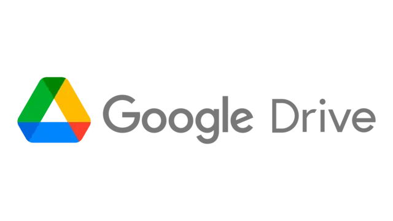

ViReo CODE: Prologo Anomalia es una experiencia inmersiva que mezcla una narrativa con potencial infinito y resolución de puzzles en entornos organicos (Vivos). Adéntrate en un Planeta Desconocido, manipula el entorno haciendo uso de tecnogia avansada y descubre el origen de la anomalía antes de que todo colapse.
